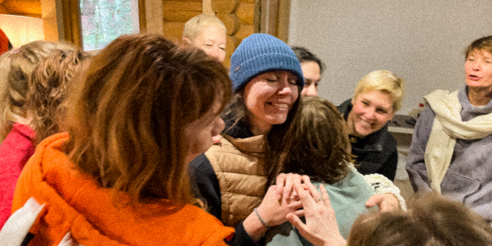
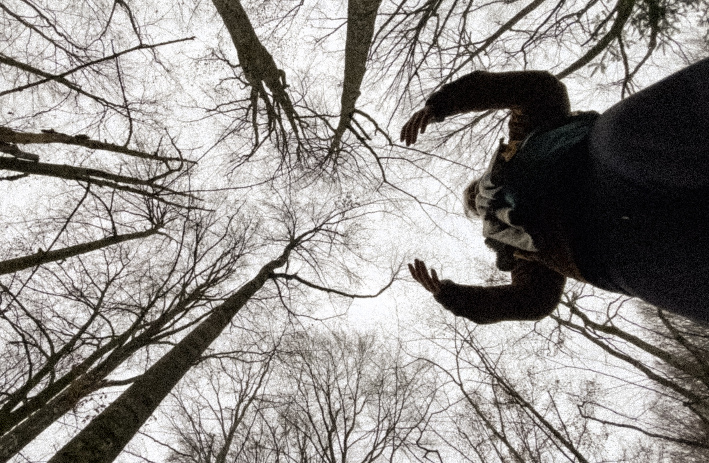
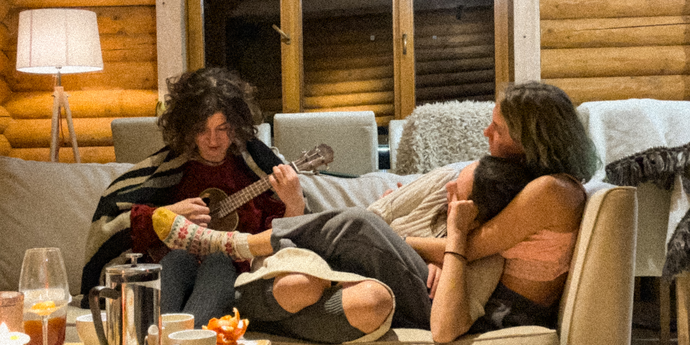

'To Stay Alive' is a digital video exhibition about the fragile return to aliveness among women providing psychological care in wartime Ukraine.
Filmed during a retreat in Lumshory, it captures a rare reversal: caregivers becoming receivers, strength giving way to softness.
Rather than depicting trauma, the work explores what makes life perceptible again — sensation, contact, voice, play, shared presence.
These videos do not document a retreat. They observe life returning.
What allows us not only to survive — but to live?
Filmed in the Carpathian Mountains, Ukraine.

Welcome back to life.
War takes this feeling away.
To survive, we become harder. It is not a choice — it is a necessity. But in doing so, we forget what it means to live. To live is to feel. To see. To hear. To touch. To breathe.
In December, in Lumshory, I witnessed something rare: women who help others survive were beginning to return to life themselves. Those who support others also need support.
This exhibition is about women. About life. And about what brings us back to it.


19 women. One circle.
Hundreds of patients.
Hundreds of lives touched by the women who protect life.




Feelings begin with sensation. Sensation begins with contact. Contact begins with the desire to come closer and to notice. The desire to come closer begins with the desire to live. Life begins with attention to the present moment. The moment is here. Now.
To live is to play. The desire to play was contagious. They did not invite me. They did not insist. They were simply immersed in their own play. Watching them, I began to play too.


You are not alone. Allow yourself not to be alone. Voices begin separately. Then they merge. Like water finding its common current. No one dominates. No one disappears. Together they create a sound impossible alone. You are not alone. Allow yourself not to be alone.

I did not know how to love myself until I loved another. I did not know how much I hurt until I saw someone else's pain. I did not see my own wound until I heard how another's wound sounded. I learned to love myself when I dared to look into my own eyes. There, I met the closest person to me. And I loved her.
I came back to life. Now I know that I am alive. But there is another life waiting. The one we must return to. A life where sirens exist. Where strength is required again. Where softness cannot always stay. We leave this place alive so that we can return — and continue living.

I would like to express my deep gratitude to the team of the charity organization 'Nadiya' (charity organization in Finland) for creating and facilitating this project and for their extensive support of Ukrainians displaced and affected by the war.
My heartfelt thanks to the remarkable women who took part in the retreat. Their presence, courage, and openness inspired this work. I am deeply grateful to have witnessed their unfolding and transformation.
I also thank the sponsors and donors who made this event possible. Your support is invaluable.
My sincere appreciation to 'Voronin's Retreat House' for its hospitality and warmth.
Special thanks to Maryna, who responded to my idea and helped bring it into reality. Without her, this project would not exist in its present form.
If this work resonates with you, consider supporting the continuation of the exhibition. Your contribution helps document and preserve women's voices during wartime.
19 women. Hundreds of lives held together. This exhibition continues because people choose to care.
You can pay with PayPal account or card.

Make sure the network is TRC20.
Bank Card
Support on Ko-fi